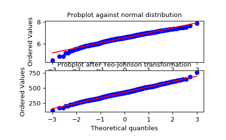

scipy.stats.yeojohnson¶
-
scipy.stats.yeojohnson(x, lmbda=None)[source]¶ Return a dataset transformed by a Yeo-Johnson power transformation.
- Parameters
- xndarray
Input array. Should be 1-dimensional.
- lmbdafloat, optional
If
lmbdaisNone, find the lambda that maximizes the log-likelihood function and return it as the second output argument. Otherwise the transformation is done for the given value.
- Returns
- yeojohnson: ndarray
Yeo-Johnson power transformed array.
- maxlogfloat, optional
If the lmbda parameter is None, the second returned argument is the lambda that maximizes the log-likelihood function.
See also
Notes
The Yeo-Johnson transform is given by:
y = ((x + 1)**lmbda - 1) / lmbda, for x >= 0, lmbda != 0 log(x + 1), for x >= 0, lmbda = 0 -((-x + 1)**(2 - lmbda) - 1) / (2 - lmbda), for x < 0, lmbda != 2 -log(-x + 1), for x < 0, lmbda = 2
Unlike
boxcox,yeojohnsondoes not require the input data to be positive.New in version 1.2.0.
References
I. Yeo and R.A. Johnson, “A New Family of Power Transformations to Improve Normality or Symmetry”, Biometrika 87.4 (2000):
Examples
>>> from scipy import stats >>> import matplotlib.pyplot as plt
We generate some random variates from a non-normal distribution and make a probability plot for it, to show it is non-normal in the tails:
>>> fig = plt.figure() >>> ax1 = fig.add_subplot(211) >>> x = stats.loggamma.rvs(5, size=500) + 5 >>> prob = stats.probplot(x, dist=stats.norm, plot=ax1) >>> ax1.set_xlabel('') >>> ax1.set_title('Probplot against normal distribution')
We now use
yeojohnsonto transform the data so it’s closest to normal:>>> ax2 = fig.add_subplot(212) >>> xt, lmbda = stats.yeojohnson(x) >>> prob = stats.probplot(xt, dist=stats.norm, plot=ax2) >>> ax2.set_title('Probplot after Yeo-Johnson transformation')
>>> plt.show()
